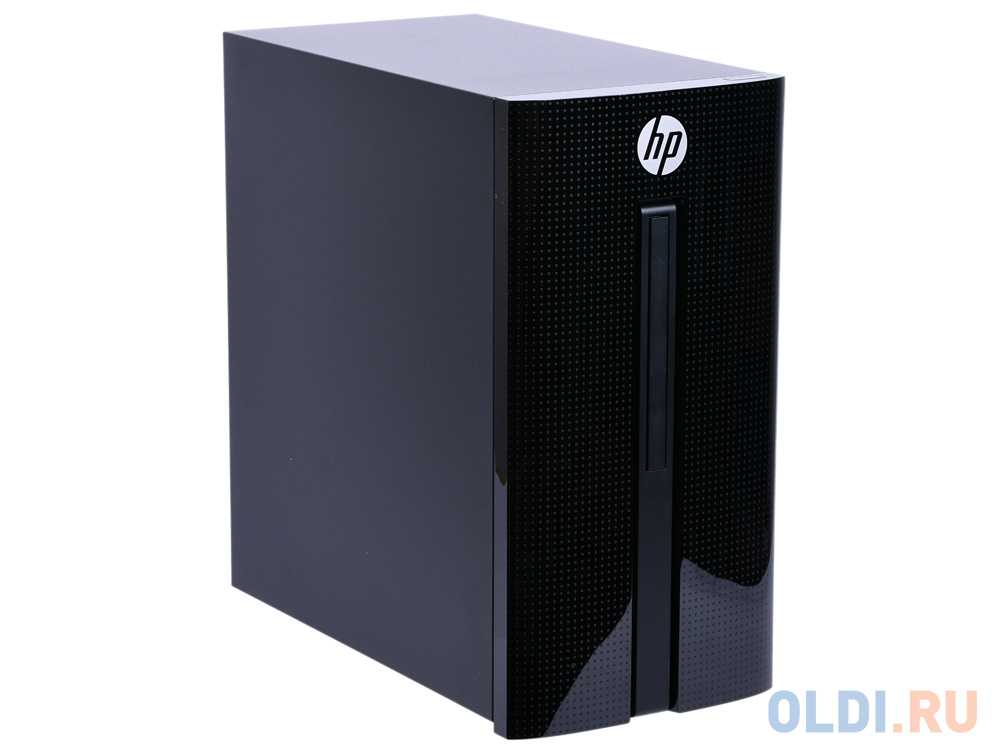

ПК HP 460 460-p206ur 4TZ92EA
Масса: 4.9кг
Габариты: 315 мм х 163 мм х 307 мм
Описание: HP 460-p206ur - мощный системный блок, который прекрасно справится с ресурсоемкими задачами, будь то запуск современных игр на высоких настройках или монтаж видео.Каждый компонент системы был тщательно протестирован на совместимость с прочими комплектующими для того, чтобы получить максимум из выбранной нами конфигурации. Ведь, как показывает практика, довольно процент пользователей не имеет достаточных познаний для того, чтобы самостоятельно собрать высокопроизводительную машину. При первом взгляде на компактный корпус формата Mini Tower вы вряд ли сможете догадаться о том, насколько мощная аппаратная начинка таится внутри: процессор Intel Core i3-7100T, 8 ГБ оперативной памяти класса DDR4 и дискретная видеокарта NVIDIA GeForce GTX 1050. Обращаем ваше внимание на то, что итоговый объем ОЗУ при желании может быть увеличен до 32 ГБ. Объем внутреннего накопителя, предназначенного для хранения данных, составляет 1 ТБ. В HP 460-p206ur предусмотрено несколько портов USB 3.1, поэтому всегда сможете расширить хранилище за счет внешних дисков или флэшек, обмениваясь данными на высокой скорости. Помимо этого, системный блок оснащен встроенным картридером и гигабитным LAN-адаптером, позволяющим передавать и принимать данные на скорости до 1000 Мбит/с. Разумеется, лишь в том случае, если возможности вашего интернет-соединения отвечают всем требованиям. Поставляется с уже предустановленной операционной системой Microsoft Windows 10.
Цена: 1350$